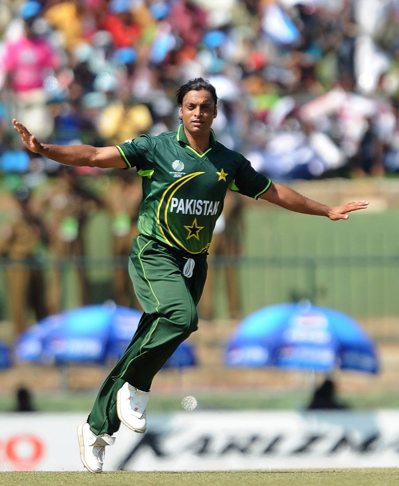
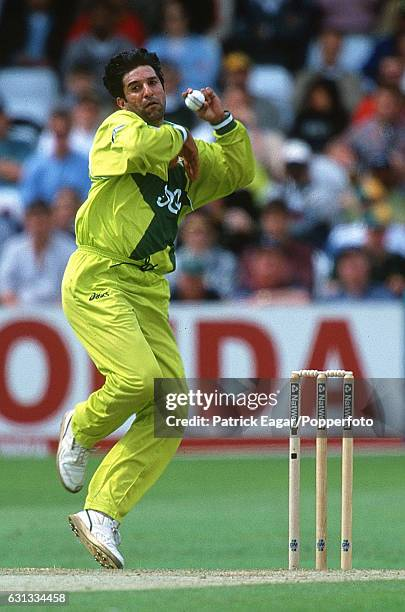
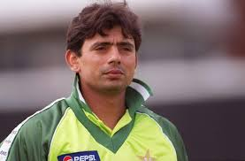
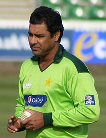
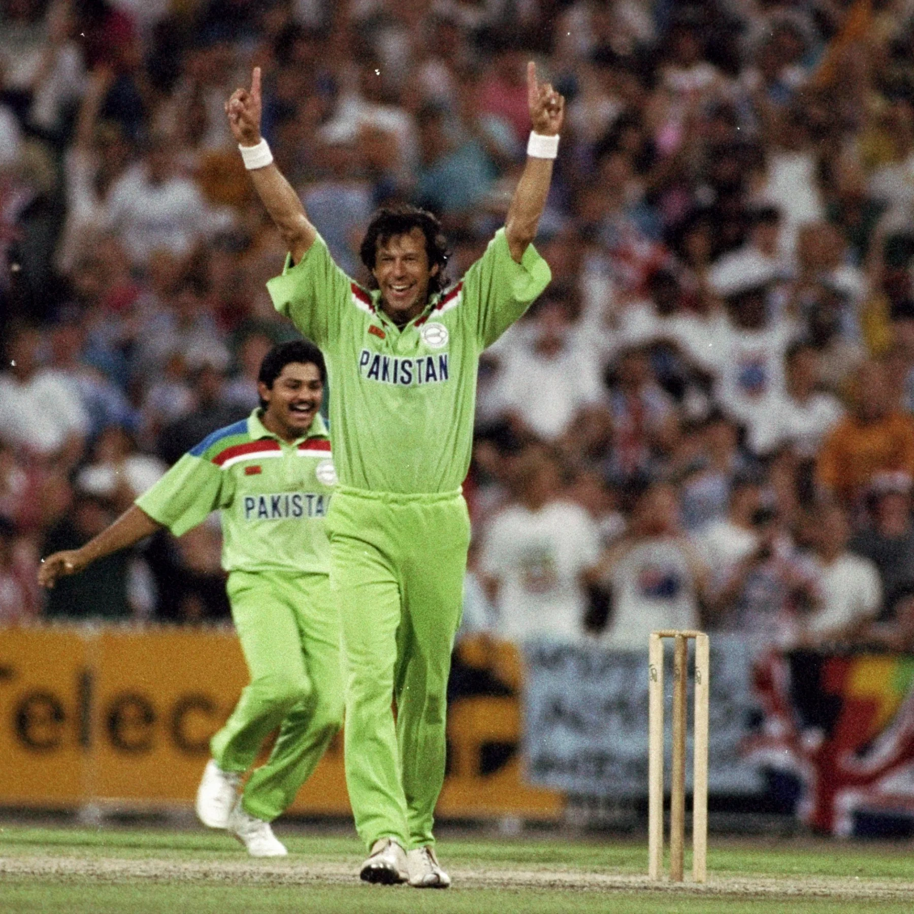
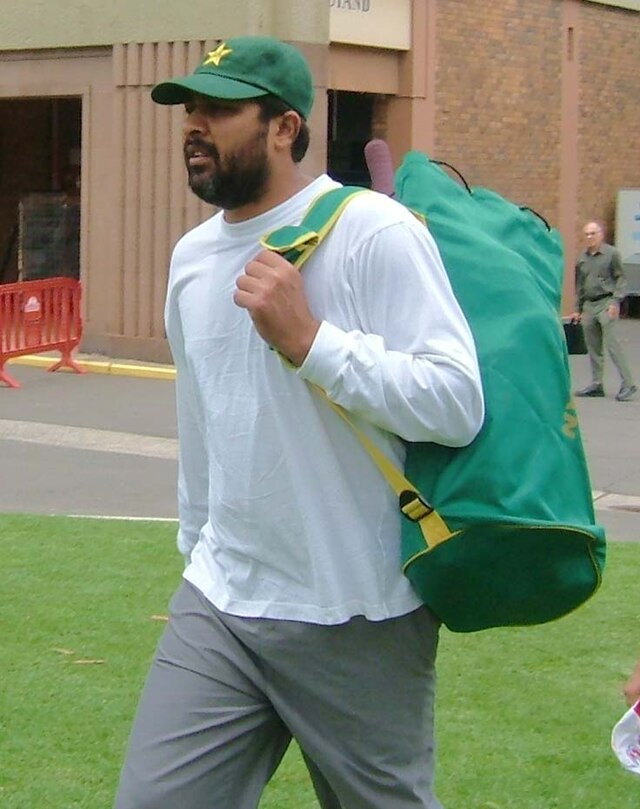
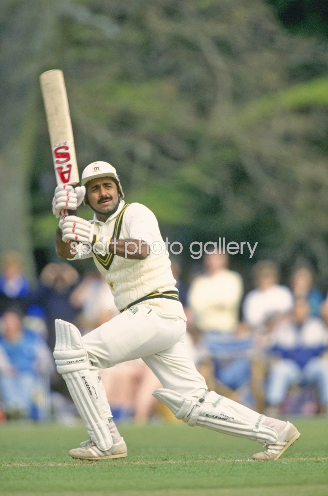

Click on the ICC below to go back to the Homepage

 |
History |
70s |
Venues |
Gaddafi Stadium, Lahore: One of the most famous cricket grounds in Pakistan, Gaddafi Stadium has a seating capacity of around 34,000. It has hosted numerous international matches, including the 1996 Cricket World Cup final1. National Stadium, Karachi: With a capacity of 30,000, this stadium is known for its passionate cricket fans. It has hosted many significant matches, including Test matches and ODIs1. Rawalpindi Cricket Stadium, Rawalpindi: This stadium has a capacity of 20,000 and is known for its lively atmosphere. It has hosted several international matches, including Test matches and ODIs1. Multan Cricket Stadium, Multan: With a seating capacity of 30,000, this stadium is one of the newer venues in Pakistan. It has hosted both domestic and international matches |
world records |
Most Wickets: Wasim Akram - 414 wickets Highest Individual Score: Hanif Mohammad - 337 runs against the West Indies in 1958 Best Bowling Figures in an Innings: Abdul Qadir - 9 wickets for 56 runs against England in 1987 Most Runs in an Innings: Fakhar Zaman - 210* runs against Zimbabwe in 2018 Most Wickets in a Career: Wasim Akram - 502 wickets Fastest Century: Shahid Afridi - Century off 37 balls against Sri Lanka in 1996 Highest Team Total in ODIs: Pakistan - 399/1 against Zimbabwe in 2018 Most Consecutive T20I Wins: Pakistan - 11 wins in a row |
What place did they get in every world cup(odi) |
1975: Group Stage 1979: Semi-Finals 1983: Semi-Finals 1987: Semi-Finals 1992: Champions 1996: Quarter-Finals 1999: Runners-Up 2003: Group Stage 2007: Group Stage 2011: Semi-Finals 2015: Quarter-Finals 2019: Group Stage 2023: Group Stage |

Shoaib Akthar also known as the rawalpindi express is held the fastest bowl in cricket history add the time with 161 km per hour until 2019.He also played 46 Tests, taking 178 wickets with an average of 25.69. In ODIs, he took 247 wickets in 163 matches at an average of 24.97. He also played 15 T20Is, claiming 19 wicket

Wasim AkramWasim Akram played 104 Tests, taking 414 wickets with an average of 23.62. In ODIs, he took 502 wickets in 356 matches at an average of 23.52. He was instrumental in Pakistan's 1992 World Cup win and is known for his mastery of swing bowling

Saqlain MushtaqMost spinner dont get the attention they need but Saqlian Mushtaq is a great player a off spinner and master of the doosra its when the ball goes into the wicket then cuts out like and outswinger anyhowSaqlain Mushtaq is a former Pakistani cricketer and a renowned off-spin bowler, best known for pioneering the "doosra" delivery, which spins away from the batsman despite being delivered with an off-spinner's action. Born on December 29, 1976, in Lahore, Pakistan, Saqlain had a remarkable career, playing 49 Test matches and 169 One Day Internationals (ODIs) for Pakistan between 1995 and 2004

Waqar YounisWaqar Younis, a legendary Pakistani fast bowler, is renowned for his ability to reverse swing the ball at high speeds. He took 373 wickets in 87 Test matches and 416 wickets in 262 ODIs. Known as the "Toe Crusher" for his lethal yorkers, Waqar formed a formidable bowling partnership with Wasim Akram

Imran KhanImran khan was a legendary cricketer and politician captained Pakistan to its first Cricket World Cup victory in 19921. He scored 3,807 runs and took 362 wickets in Test matches2. Known for his reverse swing and leadership, he played 88 Tests and 175 ODIs
Babar Azam, born on October 15, 1994, in Lahore, Pakistan, is a top-order right-handed batsman and one of the best modern-day cricketer. He has scored over 4,200 runs in Test matches, 6,100 runs in ODIs, and 4,200 runs in T20Is12. Known for his consistency and elegant stroke play, Babar has already set numerous records, including being the fastest to 1,000 T20I runs

Inzaman ul haqInzamam-ul-Haq, born on March 3, 1970, in Multan, Pakistan, is one of the greatest batsmen in cricket history. He scored 8,830 runs in 120 Test matches and 11,739 runs in 378 ODIs12. Inzamam played a crucial role in Pakistan's 1992 World Cup victory, particularly with his match-winning knock in the semi-final against New Zealand
>

Javed MiniadJaved Miandad played 124 Tests, scoring 8,832 runs at an average of 52.57. In ODIs, he scored 7,381 runs in 233 matches at an average of 41.70. He is famous for his last-ball six against India in the 1986 Austral-Asia Cup final. Miandad was also a key player in Pakistan's 1992 World Cup-winning team.